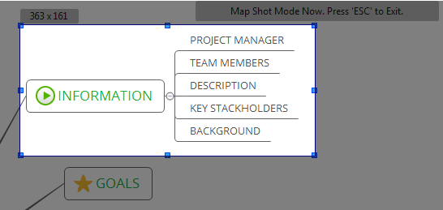

Mapshot
Mapshot lets you share either the whole or a part of a map with someone, without requiring them to have XMind installed. Here's how to:
Create a Mapshot:
- Open a map.
- You have two methods to begin the Mapshot creation process:
- Click 'F7'.
- Choose 'Tools > Map Shot' on the menu.
- Select the area by clicking and dragging the mouse.
- The chosen area will be highlighted.
- Change the area scope by dragging and moving the slider on the border.
- Double click the chosen area, XMind will copy the selected area and save it in an image file format to your desktop automatically.* You can quickly share it with others or paste it into other applications.

Note:
- The saved image file is PGN format, so it can be viewed using any image viewing or editing program.
- You can change Mapshot settings by clicking "Edit > Preferences > Mind Map > Mapshot" on the menu.